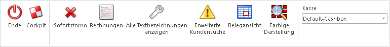

Ø Ende
Schließt das Kassendashboard und wechselt zurück zur letzten Applikation bzw. zum Cockpit, falls die Kasse aus dem Cockpit heraus gestartet wurde.
Ø Cockpit
Wenn dieser Button betätigt wird, wird in das zuletzt verwendete Cockpit gewechselt.
Ø Sofortstorno
Mithilfe dieses Buttons kann der letzte Beleg des gerade angemeldeten Benutzers direkt storniert werden. Dieser stornierte Beleg wird anschließend wieder mit den Artikelzeilen im Kassendashboard geladen und kann weiter verarbeitet werden. Die Option Sofortstorno kann gesperrt werden, wenn dem Benutzer die Stornoberechtigung in der Stufe Faktura lt. FAKT-Parametern entzogen wird.
Ø Rechnungen
Öffnen das Fenster "Rechnungsstorno" um Belege anzuzeigen, nachzudrucken oder zu stornieren. Auch hier richtet sich die Berechtigung des Storno nach den FAKT-Parametern.
Ø Alle Textbezeichnungen anzeigen
Wenn diese Option aktiviert ist, werden bei der Funktion "Packlistendruck" alle in den Belegoptionen hinterlegten Textbezeichnungen angezeigt (siehe Funktionsbutton Gliederung). Andernfalls werden nur jene Textbezeichnungen angezeigt, welche mittels Funktion Gliederung in den gerade offenen Beleg eingefügt wurden.
Ø Erweiterte Kundensuche
Falls diese Option aktiviert ist, wird beim Aufruf der Funktion "Kundenwechsel" ein Fenster mit dem erweiterten Matchcode geöffnet. Andernfalls wird ein vereinfachtes Fenster zur Suche geöffnet.
Ø Belegansicht
Bei aktivierter Option, werden immer die geparkten Belege beim Öffnen des Kassendashboard angezeigt, sofern welche vorhanden sind. Andernfalls wird die Kasse immer mit der Artikeleingabe gestartet.
Ø Farbige Darstellung
Wenn diese Option aktiviert ist, werden Belege in der Belegübersicht (Belegwechsel) je nach Status verschieden farbig dargestellt:
Orange: Es wurde weder Bestellung noch eine Vorschau ausgegeben.
Blau: Bestellung bei diesem Beleg wurde bereits ausgegeben.
Grün: Bestellung und Vorschau wurde bereits ausgegeben.